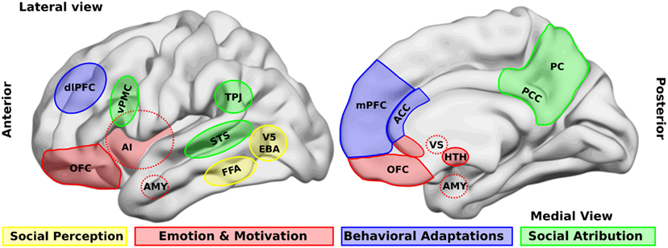

💪 Sức khỏe Nam giới
Relationship — Sex Dialogue & BoundariesDeep dive⏱ 8 phút đọc
Cách Mở Lời Về Chuyện Tình Dục: Xây Dựng Không Gian An Toàn Cho Mong Muốn & Ranh Giới
Nhiều cặp đôi có thể thảo luận dễ dàng về tài chính gia đình hay nuôi dạy con cái, nhưng lại hoàn toàn 'đóng băng' khi bước vào cuộc trò chuyện về khoái cảm và sự thỏa mãn giường chiếu. Các nghiên cứu tình dục học chứng minh: Sự hài lòng tình dục trong các mối quan hệ lâu năm không phụ thuộc vào kỹ thuật cao siêu, mà được dự đoán chính xác nhất bởi khả năng đối thoại tình dục cởi mở (Sexual Communication).
Đừng bao giờ bắt đầu một cuộc đối thoại nhạy cảm về tình dục ngay trên giường hoặc ngay sau một trải nghiệm không như ý. Hãy chọn một thời điểm trung tính khi cả hai đều thư giãn và mặc quần áo đầy đủ, bắt đầu bằng lời khẳng định tình yêu và tập trung vào những điều bạn mong muốn trải nghiệm thêm.
Nghịch Lý Của Sự Im Lặng: Vì Sao Chúng Ta Sợ Trò Chuyện Về Tình Dục?
Tình dục là một trong những hoạt động mang tính tổn thương (vulnerable) cao nhất của con người. Khi bộc lộ một khao khát thầm kín hoặc thừa nhận mình chưa thực sự đạt khoái cảm, nam giới và phụ nữ thường phải đối mặt với hai nỗi sợ nguyên thủy lớn:
1. Nỗi sợ bị phán xét hoặc từ chối (Fear of Rejection): Lo ngại đối phương nghĩ mình "biến thái", kỳ quặc hoặc quá đòi hỏi.
2. Nỗi sợ làm tổn thương đối tác (Fear of Inadequacy): Nam giới sợ bị đánh giá là yếu kém bản lĩnh; trong khi phụ nữ sợ làm tổn thương lòng tự trọng của người đàn ông.
Hậu quả của sự im lặng là hiện tượng "Đoán Ý Trong Bóng Tối" (Mind Reading): Cả hai người tự suy diễn những gì đối phương thích dựa trên phim ảnh hoặc các mối quan hệ cũ, dẫn đến sự lệch pha ngày càng sâu sắc. Nghiên cứu đăng trên Journal of Sex Research (Byers et al.) khẳng định: Các cặp đôi giao tiếp tình dục cởi mở có mức độ hài lòng về mối quan hệ và tần suất đạt cực khoái cao gấp 2.5 lần so với nhóm giữ im lặng.

📊 Sơ đồ y khoa: Cấu trúc thấu cảm cảm xúc và nhận thức: Không gian an toàn tâm lý giúp các cặp đôi cởi mở chia sẻ mong muốn và ranh giới mà không kích hoạt phản xạ phòng thủ thần kinh. Nguồn sơ đồ: Wikimedia Commons ↗
3 Quy Tắc Bất Di Bất Dịch Cho Cuộc Trò Chuyện Phòng The
Quy Tắc Vàng
Cách Thực Hiện Đúng
Sai Lầm Cần Tuyệt Đối Tránh
Quy Tắc "Quần Áo Đầy Đủ" (Outside the Bedroom)
Thảo luận khi đang đi dạo công viên, ngồi quán cà phê yên tĩnh hoặc khi lái xe.
Nói chuyện khi đang khỏa thân trên giường hoặc ngay sau khi vừa "thất bại".
Tập Trung Vào Điều Tích Cực (Positive Reinforcement)
Nói về những gì làm bạn hưng phấn: "Anh rất thích khi em làm như vậy..."
Liệt kê lỗi sai: "Em chẳng bao giờ chủ động cả, làm anh chán ngấy."
Sử Dụng Cấu Trúc "Tôi Cảm Thấy" (I-Statements)
"Anh cảm thấy rất gắn kết khi chúng ta dành thời gian dạo đầu chậm rãi."
Tấn công đối phương: "Kỹ năng của em có vấn đề."
Ranh Giới (Boundaries): Phân Biệt "Green - Yellow - Red"
Để tạo sự thoải mái tối đa cho cả hai, chuyên gia tình dục học Emily Nagoski (tác giả Come as You Are) đề xuất bài tập phân loại ranh giới đèn giao thông:
- Vùng Xanh (Green Light): Những điều cả hai đều cực kỳ yêu thích, luôn sẵn sàng và cảm thấy thăng hoa khi thực hiện.
- Vùng Vàng (Yellow Light - Curiosity Window): Những điều một trong hai người tò mò, muốn thử nghiệm với điều kiện đối phương thoải mái và có thể dừng lại bất cứ lúc nào nếu cảm thấy không hợp.
- Vùng Đỏ (Red Light - Hard Limits): Những ranh giới tuyệt đối không vượt qua. Tôn trọng vùng đỏ của bạn đời mà không phán xét là nền tảng vững chắc nhất của niềm tin tình dục.
Giao Thức 4 Bước Khởi Đầu Cuộc Trò Chuyện Tình Dục
Gieo Hạt Giống Nhẹ Nhàng (Paving the Way): Chọn một thời điểm thư giãn vào ban ngày và mở lời: "Hôm nay anh đọc được một bài viết rất hay về sự gắn kết lứa đôi. Tối nay mình dành 15 phút chia sẻ xem có điều gì mới mẻ tụi mình muốn khám phá cùng nhau không em nhé?".
Khẳng Định Sự An Toàn & Yêu Thương: Bắt đầu bằng việc trấn an: "Anh yêu em và trân trọng sự hòa hợp của chúng mình. Anh muốn chia sẻ để tụi mình ngày càng gần gũi nhau hơn nữa".
Sử Dụng Trò Chơi Hỏi - Đáp Cởi Mở: Đặt những câu hỏi mở thú vị:
- "Khoảnh khắc nào bên anh khiến em cảm thấy được yêu thương và hưng phấn nhất?"
- "Có điều gì em luôn tò mò muốn thử nhưng chưa có dịp nói ra không?"
Lắng Nghe Thuần Túy Mà Không Phản Bác: Khi đối phương chia sẻ, hãy kìm nén phản xạ tự ái hoặc thanh minh. Chỉ cần mỉm cười và cảm ơn: "Cảm ơn em đã chia sẻ thật lòng với anh. Anh rất vui vì biết được điều đó".
Tài Liệu Tham Khảo & Nguồn Y Khoa
Byers, E. S. (2005).Relationship satisfaction and sexual satisfaction: A longitudinal study of individuals in long-term relationships. Journal of Sex Research, 42(2), 113–118. Báo Cáo Nghiên Cứu Gốc (NCBI PubMed: 16123841) ↗
MacNeil, S., & Byers, E. S. (2009).Role of sexual self-disclosure in the sexual satisfaction of long-term heterosexual couples. Journal of Sex Research, 46(1), 3–14. Báo Cáo Nghiên Cứu Gốc (NCBI PubMed: 19117215) ↗
Frederick, D. A., Lever, J., Gillespie, R., & Garcia, J. R. (2017).What keeps passion alive in long-term relationships? Journal of Sex Research, 54(7), 797–824. Báo Cáo Nghiên Cứu Gốc (NCBI PubMed: 27885859) ↗
Mark, K. P., & Jozkowski, K. N. (2013).The mediating role of sexual and nonsexual communication in couples' relationship satisfaction. Journal of Sex & Marital Therapy, 39(5), 410–427. Báo Cáo Nghiên Cứu Gốc (NCBI PubMed: 23768228) ↗
📚
Nguồn Tham Khảo Y Khoa & Nghiên Cứu Gốc
Bài viết này được tổng hợp và kiểm chứng từ các nghiên cứu y sinh học, hướng dẫn lâm sàng và tài liệu khoa học thiết bị đeo của Journal of Sex Research & Annual Review of Sex Research.
💪 Men's Health
Relationship — Sex Dialogue & BoundariesDeep dive⏱ 8 min read
Talking About Sex With Your Partner: Creating Emotional Safety for Desires & Boundaries
Couples often navigate complex joint finances or parenting logistics with ease, yet become utterly paralyzed when attempting to articulate their erotic desires and boundaries. Sexological clinical literature confirms that long-term sexual satisfaction is predominantly predicted not by novel acrobatic techniques, but by honest, vulnerable dyadic sexual communication.
Never initiate a vulnerable sexual conversation in bed or immediately following an awkward encounter. Pick a neutral daytime setting when both partners are fully clothed and relaxed, begin with emotional reassurance, and frame desires as exciting collaborative explorations rather than criticisms.
The Paradox of Silence: Why We Fear Talking About Sex
Sexuality is among the most vulnerable experiences in human life. Articulating a private desire or admitting that current intimacy feels unfulfilling forces partners to confront two primal fears:
1. Fear of Rejection or Judgment: Anxiety that our partner will label us perverted, inadequate, or demanding.
2. Fear of Causing Inadequacy: Men fear having their masculine competence questioned; women fear wounding their partner's fragile sexual self-esteem.
The tragic byproduct of silence is "Erotic Mind Reading": Partners guess what the other wants based on pornography or past relationships, widening misattunement. Research in the Journal of Sex Research (Byers et al.) confirms: Couples practicing open sexual communication experience 2.5 times higher relationship satisfaction and orgasm frequency than silent cohorts.
📊 Scientific Figure: Neural architecture of empathy: Emotional attunement allows partners to openly discuss intimate boundaries without activating defensive threat pathways. Diagram source: Wikimedia Commons ↗
3 Immutable Rules for Bedroom Conversations
Golden Rule
Clinical Execution
Common Mistake to Avoid
"Fully Clothed" Protocol
Talk while walking in the park, driving, or having a relaxed coffee outside.
Initiating in bed while naked or immediately following an awkward encounter.
Focus on Positive Amplification
Share what excites you: "I loved it when you touched my neck slowly..."
Cataloging faults: "You never initiate and it frustrates me."
Use "I" Statements
"I feel intensely connected when we take our time with foreplay."
Shaming your partner: "Your technique isn't working."
Boundaries: Navigating Green, Yellow, and Red
Sexologist Emily Nagoski (Come as You Are) advocates traffic-light boundary mapping:
- Green Light: Acts that both partners thoroughly enjoy, anticipate, and celebrate without hesitation.
- Yellow Light (Curiosity Window): Explorations that one partner is curious to try, provided both feel safe and have permission to stop at any second without shame.
- Red Light (Hard Limits): Absolute boundaries that are completely off the table. Respecting red lights without negotiation is the foundational pillar of erotic safety.
4-Step Practical Protocol for Initiating Sexual Dialogue
Seed the Conversation Gently: Pick a relaxed daytime moment: "I read a fascinating article on couples intimacy today. Could we set aside 15 minutes tonight to explore some new things we might enjoy together?"
Establish Reassurance First: Affirm: "I love you and adore our connection. I want to talk because I want us to feel even closer and have more fun together."
Use Open Erotic Inquiries:
- "What is a memory of us together that felt especially exciting for you?"
- "Is there something you have always wondered about trying that we haven't explored yet?"
Listen Without Defensiveness: When your partner speaks, silence the urge to justify or defend. Smile, breathe, and validate: "Thank you for trusting me with that. I am so glad I know."
Clinical References & Scientific Sources
Byers, E. S. (2005).Relationship satisfaction and sexual satisfaction: A longitudinal study of individuals in long-term relationships. J Sex Res, 42(2), 113–118. View on PubMed ↗
MacNeil, S., & Byers, E. S. (2009).Role of sexual self-disclosure in the sexual satisfaction of long-term heterosexual couples. J Sex Res, 46(1), 3–14. View on PubMed ↗
Frederick, D. A., et al. (2017).What keeps passion alive in long-term relationships? J Sex Res, 54(7), 797–824. View on PubMed ↗
Mark, K. P., & Jozkowski, K. N. (2013).The mediating role of sexual and nonsexual communication in couples' satisfaction. J Sex Marital Ther. View on PubMed ↗
📚
Clinical Reference & Scientific Backing
This article is synthesized from peer-reviewed medical literature, clinical guidelines, and wearable biometric validation studies from Journal of Sex Research & Annual Review of Sex Research.